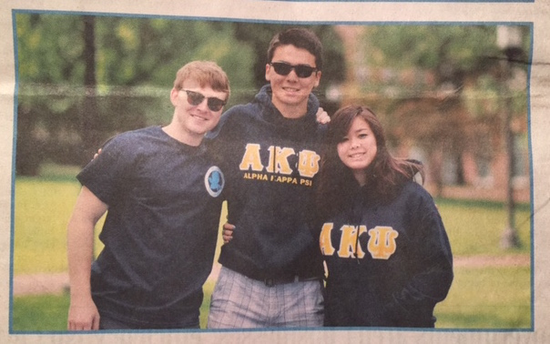

In the News
| 1/12/2016 | My Electrical & Computer Engineering Department Student Profile is published |
| 1/7/2016 | Fusiform is accepted into AccelerateBaltimore |
| 12/15/2015 | My team won the Intro to Mechatronics Final Competition! |
| 10/30/2015 | Fusiform is selected by the Social Innovation Lab to be part of its final cohort |
|
 Proud brother of the oldest and largest professional business fraternity |
|
|
|
|
|
Back at South Side High School... |
|
| 4/9/2015 | How I asked my date to the prom |
|
|
|
| 11/29/2013 | Newsday does a story on a free online tutoring website I cofounded, SSHSTutoring.com |
| 11/13/2013 | Local newspapers pick up the story on SSHSTutoring.com |
| 10/19/2012 | I was recognized as a Siemens Semifinalist for my summer research at Memorial Sloan Kettering Cancer Center |